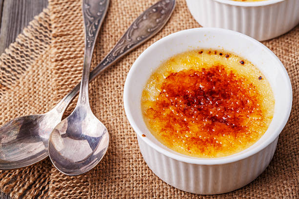

Ingrediënten voor 4 personen

3 eieren
40 gram suiker
250 gram mascarpone
20 lange vingers
kopje koffie
3 eetlepels cacaopoeder
amaretto
| Stap 1 | Split als eerste de eieren en voeg vervolgens bij het eigeel de suiker en mascarpone toe. Meng dit door elkaar. |
| Stap 2 | Klop daarna de eiwitten stijf en meng dit vervolgens met het mengsel van het eigeel. |
| Stap 3 | Doop de lange vingers in de koffie en amaretto en verdeel dit daarna over de bodem van de schaal. |
| Stap 4 | Giet de helft van het mengsel eroverheen. |
| Stap 5 | Doe dan weer hetzelfde: doop de lange vingers in de koffie en amaretto en verdeel ze daarna weer boven op de schaal en daarover het overige van het mengsel. |
| Stap 6 | Strooi het cacaopoeder erover en laat het vervolgense een nacht rusten in de koelkast. |